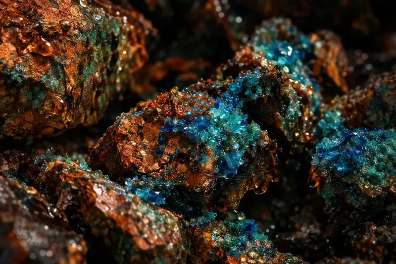

01 · Microbio
Biolixiviación genómica
Secuenciamos los microorganismos de tu mineral y diseñamos consorcios nativos que aceleran la disolución del cobre, incluso en minerales de baja ley.
GanasMás recuperación con menos ácido.
Evaluarlo en el diagnóstico